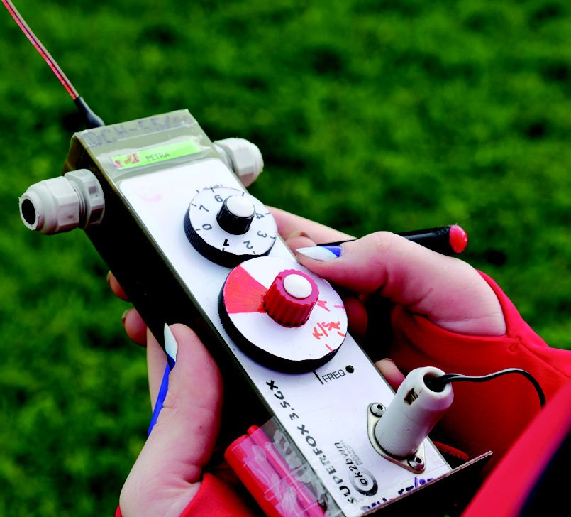
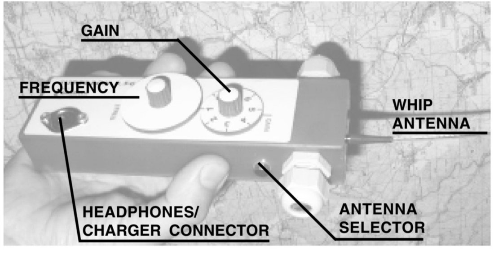
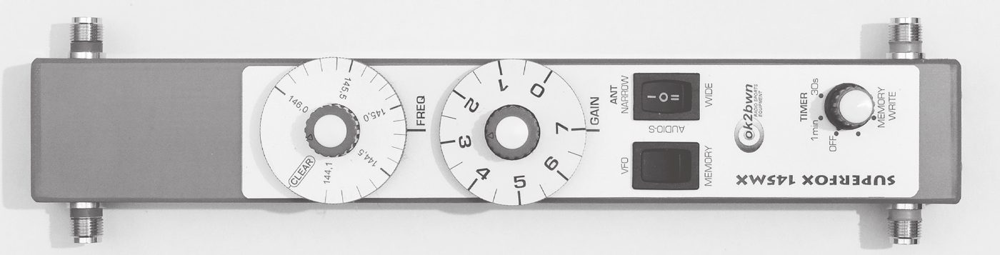
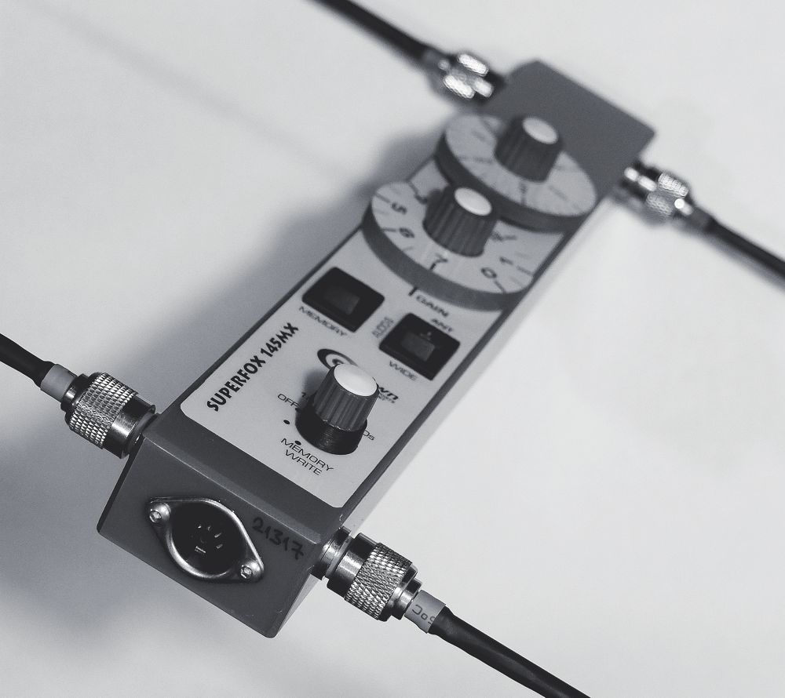

SUPERFOX 수신기 설명서 3.5 MHz · 145 MHz 방향 탐지 수신기 통합 사용 안내
체코 OK2BWN이 만드는 ARDF 수신기 SUPERFOX의 조작, 안테나 패턴, 실전 탐색 요령, 메모리·타이머·배터리 관리와 사양을 제조사 설명서 기준으로 정리했습니다.

사진: Miloslav Nečas- Maker
- OK2BWNJiří Mareček, 체코
- 3.5 MHz
- 3.5GX · 3.5MX페라이트 + 위상 휩
- 145 MHz
- 145DX · 145MX대칭형 HB9CV
- Power
- 헤드폰 = 전원꽂으면 켜지고 뽑으면 꺼짐
기기 개요와 주의사항
3.5GX와 3.5MX, 두 기종의 관계
SUPERFOX 3.5 MHz 수신기는 체코의 ARDF 장비 제작자 Jiří Mareček(OK2BWN)이 만든 80 m 대역 방향 탐지 수신기입니다. 제조사 자료에 따르면 SUPERFOX를 쓴 선수들이 세계선수권에서 22번 우승(메달 60개), 유럽선수권에서 27번 우승(메달 85개)했습니다.
100 × 180 × 30 mm 크기의 본체 안에 대칭형 페라이트 막대가 들어 있고, 위쪽 나사 구멍에 휩을 끼워 씁니다. 크리스털 IF 필터와 8단계 감도 조절로 아주 약한 신호(−135 dBm)부터 송신 안테나 바로 앞의 강한 신호까지 받습니다. 3.5GX는 아날로그 동조 기본형이고, 3.5MX는 3.5GX를 디지털 신시사이저로 바꾸고 6채널 메모리와 타이머를 더한 후속 기종입니다.
주의사항
- 충전은 전용 충전기로만 합니다. 3.5GX는 N28, 3.5MX는 N40입니다.
- 사용 온도는 −10 ~ +60 °C, 보관 온도는 −20 ~ +60 °C입니다.
- 방수는 비산수 수준(IP63)입니다. 물에 잠기게 하지 말고, 케이스를 열었다면 다시 밀봉합니다.
- 전선 아래를 지날 때는 휩이 전선에 닿지 않게 합니다.
조작부
주파수·감도 다이얼, 은색 ANT 버튼, 위쪽 휩

- 1FREQUENCY 주파수송신기 소리가 가장 크고 듣기 편한 음높이가 되는 곳에 맞춥니다.
- 2GAIN 감도 0–7처음엔 7, 가까워질수록 낮춥니다. 한 칸이 약 15 dB입니다.
- 3헤드폰 · 충전기 단자헤드폰을 꽂으면 켜집니다. 충전기도 여기에 연결합니다.
- 4안테나 선택 버튼 (옆면, ANT)놓으면 8자, 누르고 있으면 카디오이드. 3.5M·MX에서는 은색 버튼입니다.
- 5휩 안테나 (위쪽)위쪽 단자에 끼웁니다. 길이로 카디오이드의 깊이를 맞춥니다.
| 조작부 | 기능 |
|---|---|
| VFO / MEM 스위치 3.5MX | VFO 연속 동조. MEM 저장한 채널 사이를 건너뜀(저장된 채널이 없으면 경고음). 가운데 MEM처럼 건너뛰면서 채널 눈금 ±1칸 안에서 최대 ±600 Hz 미세 조정. |
| TIMER / MEMORY WRITE 3.5MX | 1 min · 30 s 송신 주기 끝나기 10초 전 예고음. OFF 예고음만 끔(시계는 계속 돎). MEMORY WRITE VFO에서 지금 주파수를 저장. |
| COMPASS 버튼 (파랑) 3.5MX 옵션 | FINDER09 전자 나침반. 짧게 누르면 방위 저장, 길게 누르면 추적. |
| 아래쪽 나사 구멍 2개 | 나침반 홀더 장착용 (간격 35 mm). |
수신기 동작 원리
더블 컨버전, 크리스털 필터, BFO, 8단계 감도
3.5GX와 3.5MX 설명서는 모두 수신 방식을 더블 컨버전 수퍼헤테로다인(Double conversion superheterodyne)으로 적고 있습니다. 약한 단파 신호를 두 번 주파수 변환해 좁은 크리스털 필터로 거른 뒤, BFO로 들을 수 있는 소리를 만드는 구조입니다.
주파수 변환과 필터
- 3.5 MHz 신호를 증폭한 뒤 1차 중간 주파수(1st IF)를 거쳐 2차 중간 주파수(2nd IF)로 내립니다. 두 번에 나누면 영상 주파수(Image frequency)를 막기 쉽고, 낮은 IF에서 좁은 필터를 쓸 수 있습니다.
- 크리스털 IF 필터의 통과 대역은 3.5MX가 1 kHz(−3 dB) / 4 kHz(−60 dB), 3.5GX가 1 kHz(−6 dB) / 6 kHz(−60 dB)입니다. 주파수가 가까운 송신기끼리도 섞이지 않습니다.
BFO와 감도 조절
- 3.5 MHz 송신기는 변조음 없는 반송파(CW, A1A)를 끊었다 이었다 하며 모스 부호를 보냅니다. 그대로는 소리가 나지 않으므로, BFO(Beat frequency oscillator)가 조금 다른 주파수를 섞어 두 주파수의 차이를 가청음으로 만듭니다. FREQ 다이얼로 이 음높이를 듣기 편하게 맞춥니다.
- 감도는 8단계, 한 단계 15 dB씩 120 dB 범위를 조절합니다. 한 단계는 송신기까지 거리 약 1 : 3에 해당하도록 맞춰져 있어, 가까이 가도 회로가 포화되지 않고 널이 또렷하게 남습니다.
안테나 패턴: 8자와 카디오이드
널로 축을 잡고, 휩으로 앞뒤를 가린다
몸체 안의 페라이트 막대는 전파의 자기장을, 위쪽 휩은 전기장을 받습니다. 은색 ANT 버튼을 놓으면 페라이트만 동작하는 8자 패턴, 누르고 있으면 휩이 더해진 카디오이드(Cardioid, 심장 모양) 패턴이 됩니다.
8자 패턴 · ANT 버튼 놓음
- 페라이트 막대 축이 송신기 방향과 일치하면 막대를 지나는 자속이 0이 되어 소리가 사라집니다. 이 널(Null)은 폭이 10°(−3 dB) 이하로 매우 좁습니다.
- 최대점은 넓고 둔하므로, 소리가 사라지는 각도로 방위 축을 잡습니다. 다만 8자는 앞뒤가 대칭이라 송신기가 축의 어느 쪽인지는 알 수 없습니다.
카디오이드 · ANT 버튼 누름
- 휩과 페라이트 신호가 위상을 맞춰 합쳐지면서 한쪽은 커지고 반대쪽은 상쇄됩니다.
- 설명서의 휩 조정 절차는 "버튼을 누른 채 조작판을 송신기 쪽으로 향하면 카디오이드의 최소점"이라고 적고 있습니다. 조작판을 내 쪽으로 보며 들면, 내 앞쪽(수신기 뒷면 방향)이 크게 들립니다.
한 줄 정리: 조작판을 내 쪽으로 보며 들고 ANT를 누른 채 반 바퀴 돌려 봅니다. 소리가 크게 들릴 때 내가 바라보는 쪽이 송신기입니다. 전후방비는 3.5MX가 40 dB 이상, 3.5GX가 20 dB 이상(보통 35 dB)입니다.
3.5 MHz와 145 MHz의 전파
파장이 40배 다르면 찾는 방법도 달라진다
3.5 MHz의 파장은 약 86 m입니다. 나무와 바위는 이 파장에 비해 아주 작아서 숲을 지나도 손실이 적고, 능선을 만나면 꼭대기에서 꺾여 산 뒤까지 들어갑니다. 방위 오차가 적지만, 소리가 커도 능선 너머 멀리 있을 수 있어 소리 크기만으로 거리를 짐작하면 틀리기 쉽습니다.
| 항목 | 3.5 MHz (80 m) | 145 MHz (2 m) |
|---|---|---|
| 파장 | 약 86 m | 약 2.1 m |
| 주된 전달 | 지표파, 지형을 따라 진행 | 가시선 직접파 |
| 능선 뒤 | 회절해 돌아 들어가 잘 들림 | 전파 그림자, 크게 약해짐 |
| 숲 | 손실 적음 | 젖은 잎·빽빽한 숲에서 감쇠 |
| 방향 왜곡 원인 | 송전선·전화선·철조망 같은 긴 금속선 | 바위벽·건물 반사파 (허상 피크) |
| 찾는 방법 | 소리가 사라지는 널로 축, 휩으로 앞뒤 | 소리가 가장 큰 피크를 겨눔 |
실전 탐색 순서
켜기 → 동조 → 감도 → 널 → 앞뒤
- 1. 켜기헤드폰을 꽂으면 켜집니다. 3.5MX는 켜질 때 배터리 잔량을 신호음으로 알려 줍니다(10장).
- 2. 동조FREQ로 송신기 소리가 또렷하고 듣기 편한 음높이가 되는 곳에 맞춥니다. 3.5MX는 저장 채널로 건너뛸 수 있습니다.
- 3. 감도처음엔 GAIN 7. 소리가 귀를 때리지 않을 만큼 낮춥니다. 널은 소리가 작을 때 더 날카롭습니다.
- 4. 방위8자 널로 축을 잡고, ANT를 눌러 앞뒤를 가린 뒤 출발합니다.
감도 값은 3.5MX 설명서의 표(오디오 출력 100 mV, 3 W 송신기)입니다. GAIN 7은 −135 dBm, 6은 −120, 5는 −105, 4는 −90(약 1 km), 3은 −75(약 300 m), 2는 −60(약 100 m), 1은 −40(약 30 m), 0은 −20 dBm(약 10 m)입니다. 거리는 지형에 따라 달라지는 대략값입니다.
방위 축 잡기 · 8자 널
1소리가 큰 쪽 찾기ANT에서 손을 떼고 몸을 돌립니다. 앞이나 뒤가 송신기를 향하면 크게 들립니다.
290° 돌려 널 맞추기소리가 사라지는 좁은 각도를 찾습니다. 이때 옆면(막대 끝)이 송신기를 가리킵니다.
3방위 축 확정송신기는 이 축 위 어느 한쪽에 있습니다. 어느 쪽인지는 아직 모릅니다.
앞뒤 가리기 · 카디오이드
1한쪽 보며 ANT 누르기조작판을 내 쪽으로 보게 들고 축의 한쪽을 바라보며 은색 버튼을 누릅니다.
2반 바퀴 돌아 비교버튼을 누른 채 180° 돌아 반대쪽 소리와 비교합니다.
3큰 쪽으로 출발더 크게 들릴 때 내가 바라보는 쪽이 송신기입니다.
그림은 위에서 내려다본 모습입니다. 사람 그림이 선수, 가운데 막대가 수신기의 페라이트, 주황 선이 조작판(선수 쪽)입니다. 오른쪽 아래 막대가 들리는 소리 크기입니다.
휩 길이 맞추기
수신기를 드는 높이에서 카디오이드가 가장 깊어지도록
카디오이드의 깊이는 휩과 페라이트에서 나오는 두 전압의 비율이 맞아야 나옵니다. 페라이트 전압은 지면에서의 높이와 상관없지만, 휩 전압은 높이에 따라 달라집니다. 그래서 평소 달릴 때 수신기를 드는 높이에 맞춰 휩 길이를 다듬습니다. 자기 키에 맞추면 약 40 dB의 전후방비를 얻을 수 있습니다.
휩 길이 맞추기 3.5MX 설명서
- 송신기를 밴드 가운데 주파수에서 연속 발신으로 두고, 울타리와 전선이 없는 곳에서 약 70 m 떨어져 섭니다.
- 수신기를 동조하고 ANT를 누른 채, 평소와 반대로 조작판을 송신기 쪽으로 향합니다(카디오이드 최소점).
- 수신기를 위아래로 움직여 소리가 가장 작은 높이를 찾습니다.
- 그 높이가 평소 수신기를 드는 높이보다 낮으면 휩을 줄이고(대부분 이 경우), 높으면 늘립니다. 5 mm씩 조정합니다.
알아 둘 점
- 패턴이 가장 좋은 범위는 맞춘 높이에서 약 ±50 cm입니다. 높이가 달라도 최대·최소 구분은 쉽게 됩니다.
- 송신기 10 m 안쪽에서는 자기장과 전기장이 다르게 커져서, 휩이 더 짧아야 할 것처럼 동작합니다.
- 그 거리에서는 대개 깃발이 보이므로, 경기의 95% 이상인 중·원거리에 맞춘 길이를 그대로 둡니다.
3.5MX 주파수 메모리
6채널 저장, 미세 조정, 전체 지우기
3.5MX는 디지털 신시사이저(주파수 안정도 20 ppm 미만)와 비휘발성 메모리를 갖추어 최대 6개 채널을 저장합니다. 저장한 내용은 전원을 꺼도 남아 있습니다.
타이머와 전자 나침반
3.5MX의 송신 종료 예고와 FINDER09
타이머는 헤드폰을 꽂는 순간 0으로 맞춰지고, 스위치 위치와 상관없이 계속 시간을 셉니다. TIMER를 1 min이나 30 s에 두면 매 1분이나 30초가 끝나기 10초 전에 신호음이 두 번 울립니다. 시계를 보지 않고도 마지막 방위를 잴 시간을 확보할 수 있습니다. 배터리가 약해지면 신호음이 한 번만 울립니다.
선택 사양인 전자 나침반 FINDER09는 오른쪽 옆의 파란 버튼으로 다룹니다. 송신이 끝나기 전에 조작판을 가려는 방향으로 겨누고 짧게 누르면 방위가 저장되고 짧은 떨림음이 납니다. 송신이 끝난 뒤 달리면서 버튼을 길게 누르고 있으면, 저장한 방향과 얼마나 어긋났는지가 음으로 들립니다. 저장한 방위는 다른 방위를 저장하거나 전원을 끌 때까지 유지됩니다.
3.5MX에서는 휩이 수직이 되게 세워 들고 저장·추적합니다. 기울기 보정 센서가 없어서 기운 만큼 최대 그 각도의 방위 오차가 생깁니다. 달리는 선수의 가속도가 중력 방향 측정을 흔들기 때문에 일부러 넣지 않았다고 설명서는 밝힙니다. GAIN 6을 넘는 가장 높은 감도에서는 나침반이 동작하는 동안 잡음이 조금 들립니다. 나침반 장착에 따른 방위 영향은 최대 ±2°입니다.
전원과 배터리
헤드폰 플러그가 전원 스위치
전원 스위치가 없습니다. 헤드폰 플러그 안에서 4번과 5번 핀이 이어져 있어, 꽂으면 배터리 전원이 수신기 회로로 들어가고 뽑으면 완전히 끊깁니다. 경기 중에 플러그가 빠지면 전원이 끊기므로 끝까지 밀어 넣습니다. 헤드폰을 직접 만들 때도 4·5번을 이어야 켜집니다.
켤 때 들리는 배터리 신호 3.5MX
- — —완전 충전
- —80 %
- · · ·60 %
- · ·40 %
- ·20 %
배터리가 약해지면 타이머의 끝 알림이 두 번에서 한 번으로 바뀝니다.
| 항목 | 3.5GX | 3.5MX |
|---|---|---|
| 배터리 | NiMH 7.2 V / 320 mAh | Li-Pol 7.4 V / 500 mAh |
| 소비 전류 · 동작 시간 | 약 18 mA · 15시간 이상 | 35–50 mA · 10시간 이상 |
| 충전기 · 시험기 | N28 · T810 | N40 · T840 |
| 켤 때 잔량 신호 | — | 있음 (오른쪽 표) |
3.5MX는 N40 충전기를 꽂으면 노란 표시등이 켜지고, 충전이 끝나면 저절로 꺼집니다. 활동이 끝나면 충전해 두면 배터리 수명이 길어집니다.
노란 표시등이 켜지지 않을 때: 배터리가 거의 차 있으면 충전기가 충전을 시작하지 않습니다. 새 배터리는 전압이 높아 40% 정도는 쓴 뒤에야 충전이 시작됩니다. 경기 후 충전기를 꽂아 표시등이 켜지면 그대로 두고, 켜지지 않으면 빼 두었다가 다음에 다시 해 봅니다.
3.5MX의 뒷덮개는 안쪽이 실리콘으로 밀봉되어 있습니다. 배터리를 바꾸거나 말리려고 열었다면, 닫은 뒤 바깥쪽을 최소한 테이프로라도 다시 밀봉합니다.
사양
3.5GX · 3.5MX 설명서 기준, 현행 3.5M · 3.5MX 제품표
| 항목 | SUPERFOX 3.5GX GX 설명서 | SUPERFOX 3.5MX MX 설명서 17W04 |
|---|---|---|
| 수신 방식 | 더블 컨버전 수퍼헤테로다인 | 더블 컨버전 수퍼헤테로다인 |
| 주파수 범위 | 3.48 – 3.71 MHz | 3.49 – 3.66 MHz |
| 수신 모드 | CW | A1A (CW) |
| 감도 | −135 dBm (S/N 10 dB) | −135 dBm (GAIN 7) |
| 안테나 | 대칭형 페라이트 + 위상 휩 | 대칭형 페라이트 + 위상 휩 |
| 전후방비 | 20 dB 이상, 보통 35 dB | 40 dB 이상 |
| 최소점 폭 (−3 dB) | — | 10° |
| IF 대역폭 | 1 kHz (−6 dB) / 6 kHz (−60 dB) | 1 kHz (−3 dB) / 4 kHz (−60 dB) |
| 불요 측파대 억압 | — | 45 dB 이상 |
| 주파수 동조 | 아날로그 | 디지털 신시사이저, 6채널 메모리 |
| 주파수 안정도 | — | 20 ppm 미만 |
| 감도 조절 | 120 dB 이상, 8단계 (단계당 15 dB) | 120 dB, 8단계 (−135 ~ −20 dBm) |
| 타이머 | 없음 | 30 s / 60 s, 끝나기 10초 전 |
| 전원 | NiMH 7.2 V / 320 mAh, 15시간 이상 | Li-Pol 7.4 V / 500 mAh, 10시간 이상 |
| 방수 | IP63 | IP63 |
| 크기 · 무게 | 100 × 180 × 30 mm, 350 g | 100 × 180 × 30 mm, 300 g |
| 사용 온도 | −10 ~ +60 °C | −10 ~ +60 °C |
| 선택 부품 | SL28 헤드폰, N28 충전기, T810 시험기, 나침반 홀더 | FINDER09, SL28 헤드폰, N40 충전기, T840 시험기, 나침반 홀더 |
현행 기종 3.5M · 3.5MX 제품표 사양 보기
OK2BWN 제품 사양표(ARDF Receivers Product Line)의 현행 기종입니다. 위 설명서와 수신 방식, 배터리, 충전기, 방수, 두께가 다르므로 새로 구입할 때는 이 표를 기준으로 확인합니다. 제품표
| 항목 | SUPERFOX 3.5M | SUPERFOX 3.5MX |
|---|---|---|
| 주파수 · 방식 | 3.49 – 3.66 MHz · 싱글 컨버전 수퍼헤테로다인 | |
| 변조 · 감도 | A1 (CW) · −135 dBm (0.04 µV) | |
| IF 필터 · 대역폭 | 3-크리스털 · 1 kHz / 4 kHz | |
| 측파대 억압 · 전후방비 | 40 dB · 40 dB | |
| VFO · 메모리 | PLL · 없음 | PLL · 6채널 |
| 타이머 | 없음 | 30 s / 1 min |
| 전원 | Li-Pol 8 V / 500 mAh, 10시간 이상 | |
| 방수 · 크기 | IP64 · 100 × 180 × 50 mm | |
| 무게 | 290 g | 300 g |
| 선택 부품 | N41 충전기, SL34 헤드폰, FINDER09, T840 시험기, 나침반 홀더 | |
기기 개요와 주의사항
145DX와 145MX, 두 기종의 관계
SUPERFOX 145 MHz 수신기는 OK2BWN이 만든 2 m 대역 방향 탐지 수신기입니다. 145DX는 SUPERFOX 145E를 디지털 신시사이저로 바꾼 기종으로 4채널 메모리를 갖추었고, 145MX는 6채널 메모리와 음성 S미터(Audio S-meter)를 더한 상위 기종입니다. 145MX는 세계선수권에서 많은 메달을 딴 기종입니다.
한 손으로 조작하는 가벼운 방수·내충격 상자에, 방향 탐지용으로 다듬은 대칭형 HB9CV 안테나, 120 dB 이상의 감도 조절, 빔 폭을 좁혀 겨누기 쉽게 하는 방향 패턴 처리 회로, 송신 종료를 알리는 타이머가 들어 있습니다. 안테나 소자는 떼어 낼 수 있어 운반이 쉽습니다.
주의사항
- 충전은 전용 충전기로만 합니다. 145DX는 N40, 145MX는 N41입니다.
- 사용 온도는 −10 ~ +60 °C, 보관 온도는 −20 ~ +60 °C입니다.
- 뒷덮개는 테이프로 밀봉되어 있습니다. 열었다면 닫은 뒤 다시 밀봉합니다.
조작판
145MX 기준. 145DX는 음성 S미터와 채널 하나 지우기가 없음

1 2 3 4 5 6 7 8◀ 앞 · 파란 소자뒤 · 빨간 소자 ▶
- 1앞 소자 단자 (파랑)전면 소자(파랑) 2개 연결 단자. 수신기 전면 방향
- 2FREQ 주파수 다이얼소리가 가장 크게 들리는 곳에 맞춥니다. 끝까지 돌린 CLEAR는 메모리 지우기용입니다.
- 3GAIN 감도 다이얼 0–7처음엔 6–7, 가까워질수록 낮춥니다.
- 4ANT 스위치WIDE 넓은 빔 폭으로 대략적인 방향 잡기 · 가운데 음성 S미터(신호가 셀수록 음이 높아짐) · NARROW 옆에서 들어오는 소리를 줄여 빔 폭을 좁힘, 정확한 방향 겨누기 (설명서 용어: 방향 패턴 확장기, Direction Pattern Expander)
- 5VFO / MEMORY 스위치VFO 연속 동조 · MEMORY 저장한 채널 사이를 건너뜀 (6장)
- 6TIMER 손잡이OFF 예고음 끔(시계는 계속 돎) · 1 min · 30 s 주기 끝나기 10초 전 예고음 · MEMORY WRITE VFO에서는 저장, MEMORY에서는 지금 채널 삭제
- 7뒤 소자 단자 (빨강)후면 소자(빨강) 2개 연결 단자
- 8헤드폰 단자 (끝면)헤드폰을 꽂으면 켜지고 타이머가 0부터 시작합니다. 충전기와 배터리 시험기도 여기에 연결합니다. 옆면의 COMPASS 버튼은 FINDER09 옵션(짧게 저장, 길게 추적)입니다.
음성 S미터는 145MX에만 있습니다. 사람의 귀는 소리 크기보다 음높이 차이를 더 예민하게 구별하기 때문에, 피크 방향을 더 정밀하게 맞출 수 있습니다. 사용 순서는 5장에서 그림으로 봅니다.

안테나 조립과 HB9CV 패턴
소리가 가장 큰 쪽을 겨눈다. 소자는 늘 수평으로
운반할 때는 안테나 소자를 떼어 둡니다. 소자 단자에는 색 표시가 있습니다. 앞 소자 2개는 파란 단자, 뒤 소자 2개는 빨간 단자에 끼우고, 달리는 동안 흔들려 접촉이 나빠지지 않게 커넥터 너트를 끝까지 조입니다.
2소자 HB9CV는 파란 소자 쪽(수신기 앞)으로 빔을 하나 만들고 뒤쪽은 줄어듭니다. 3.5 MHz처럼 소리가 사라지는 곳을 찾는 것이 아니라, 몸을 천천히 돌려 소리가 가장 크게 들리는 방향(피크)을 겨눕니다.
| 항목 | 145DX DX 설명서 | 145MX MX 설명서 21W04 |
|---|---|---|
| 주 로브 폭 (−3 dB) | WIDE 20°, NARROW 10° | WIDE 30°, NARROW 15° |
| 전후방비 | 40 dB 이상 | 40 dB 이상 |
뒤쪽이 완전히 조용하지는 않습니다. 송신기 수십 m 안쪽에서는 지면 반사 등으로 뒤쪽에서도 작은 소리가 들립니다. 180° 돌려 보아 소리가 확연히 작아지는 쪽이 뒤, 가장 크게 올라오는 쪽이 앞입니다. 145 MHz 송신기는 수평 편파이므로 소자를 지면과 수평으로 들어야 수신 감도와 방위 정확도가 가장 높습니다.
반사파와 교차 방위
한 번 잰 방향을 믿지 말고, 자리를 옮겨 한 번 더
145 MHz(파장 약 2.1 m)는 빛처럼 곧게 나아가고, 바위벽·절벽·건물에서 거울처럼 반사됩니다. 직접파가 능선이나 숲에 막혀 약해진 곳에서는 반사파가 더 크게 들려, 수신기가 엉뚱한 쪽을 가리킵니다. 이것이 허상 피크(Ghost peak)입니다.
버튼을 눌러 측정 위치를 고르십시오. 지금은 지도만 보입니다.
골짜기를 벗어나 능선으로
- 골짜기나 암벽 아래 분지는 반사파가 사방에서 섞이는 곳입니다.
- 신호가 흐리거나 여러 방향에서 동시에 들리면, 시야가 트인 능선이나 봉우리로 올라가 직접파를 잡습니다.
- 수신기를 높이 들면 지면 반사의 영향이 줄어듭니다.
기저선을 두고 교차 방위
- 능선의 A 지점에서 방위를 재어 지도에 긋습니다.
- 능선을 따라 50–100 m 이상 옮긴 B 지점에서 다시 잽니다.
- 두 방위선이 만나는 곳이 송신기입니다. 국소 반사로 생긴 가짜 방위선은 교차점에서 크게 비켜 갑니다.
실전 탐색 순서
켜기 → 동조 → 감도 → WIDE로 대략적인 방향 잡기 → NARROW·S미터로 정확하게 겨누기
- 1. 켜기헤드폰을 꽂으면 켜지고, 배터리 잔량을 신호음으로 알려 줍니다(8장).
- 2. 동조FREQ로 송신기 신호가 가장 또렷하고 큰 곳에 맞춥니다. 저장 채널이 있으면 MEM으로 건너뜁니다.
- 3. 감도먼 거리에서는 GAIN 6–7. 시끄럽지 않고 맑게 들릴 만큼 낮춥니다. 피크는 소리가 작을 때 더 잘 구분됩니다.
- 4. 방위소자를 수평으로 들고 몸을 360° 돌려 가장 큰 방향을 찾습니다.
피크 찾기 · HB9CV
1WIDE로 대략적인 방향 잡기소자를 땅과 수평으로 들고 넓은 빔 폭으로 천천히 돌며 소리가 큰 쪽을 찾습니다.
2NARROW로 빔 폭 좁히기빔 폭을 좁혀 소리가 가장 큰 방향을 정확하게 겨눕니다.
3음성 S미터 (145MX)ANT를 가운데에 두면 신호가 셀수록 음이 높아집니다. 가장 높은 곳이 피크입니다.
4흐리면 자리 옮기기수십 m 옮겨 다시 재고, 두 방위선이 만나는 곳을 찾습니다.
145 MHz 설명서에는 GAIN 단계별 거리표가 없습니다. 실전 감각으로는 GAIN 3이 약 200 m, 2가 약 80 m, 0–1이 송신기 10–30 m 앞 정도이지만, 송신 출력과 지형에 따라 크게 달라집니다.
주파수 메모리
145DX 4채널, 145MX 6채널
주파수를 145DX는 최대 4개, 145MX는 최대 6개 채널에 저장해 두고 경기 중에 건너뛰며 씁니다. 저장한 내용은 전원을 꺼도 남아 있습니다.
타이머와 전자 나침반
송신 종료 예고와 FINDER09
타이머는 헤드폰을 꽂는 순간부터 시간을 셉니다. TIMER를 1 min이나 30 s에 두면 매 1분이나 30초가 끝나기 10초 전에 신호음이 울립니다. 145DX 설명서는 두 번 울리는 비프음, 145MX 설명서는 · — · 소리로 적고 있습니다. OFF로 두어도 시계는 계속 돌아갑니다.
선택 사양인 전자 나침반 FINDER09는 오른쪽 옆 버튼(145DX 설명서는 빨간 버튼, 145MX는 파란 버튼)으로 다룹니다. 짧게 누르면 지금 겨눈 방향이 저장되고 짧은 떨림음이 납니다. 송신이 끝난 뒤 달리면서 버튼을 길게 누르고 있으면, 저장한 방향과 얼마나 어긋났는지가 음으로 들립니다.
145 MHz 수신기에서는 수신기를 수평으로 들고 저장·추적합니다. 기울기 보정 센서가 없어 기운 만큼 방위가 틀어질 수 있습니다. GAIN 6을 넘는 가장 높은 감도에서는 나침반이 동작하는 동안 잡음이 조금 들립니다. 저장한 방위는 전원을 끄면 지워집니다.
전원과 배터리
헤드폰 플러그가 전원 스위치
전원 스위치가 없습니다. 헤드폰 플러그 안에서 4번과 5번 핀이 이어져 있어, 꽂는 순간 배터리 전원이 수신기 회로로 들어갑니다. 경기 중에 플러그가 빠지면 전원이 끊기므로 끝까지 밀어 넣습니다.
켤 때 들리는 배터리 신호
- — —완전 충전
- —80 %
- · · ·60 %
- · ·40 %
- ·20 %
145MX는 배터리가 20 %까지 내려가면 타이머의 끝 알림 소리(· — ·)가 짧은 점(·) 하나로 바뀝니다. 20 %는 아직 1–2시간 쓸 수 있는 양입니다.
| 항목 | 145DX | 145MX |
|---|---|---|
| 배터리 | Li-Pol 8.4 V / 450 mAh | Li-Pol 8.4 V / 500 mAh |
| 소비 전류 · 동작 시간 | 40–50 mA · 9시간 이상 | 약 10시간 |
| 충전기 | N40 (노란 등: 충전 중, 깜박임: 완료) | N41 (주황: 충전 중, 초록: 완료) |
| 방수 | IP63 | IP64 |
제조사는 경기나 훈련이 끝나면 충전해 두라고 권합니다. 배터리 수명이 길어집니다. 이미 충분히 차 있으면 충전이 시작되지 않는데, 이때는 다음에 다시 꽂으면 됩니다. 몇 달 이상 쓰지 않고 보관할 때는 일반적인 리튬 폴리머 관리 요령대로 50–60% 정도로 두는 것도 좋습니다.
젖으면 마른 천으로 닦고 상온에서 말리며, 난로 같은 강한 열은 피합니다. 뒷덮개를 연 적이 있다면 닫은 뒤 테이프로라도 다시 밀봉합니다. 소자 단자와 헤드폰 단자는 물기와 이물질이 없게 관리합니다.
사양
145DX · 145MX 설명서 기준, 현행 145M · 145MX 제품표
| 항목 | SUPERFOX 145DX DX 설명서 | SUPERFOX 145MX MX 설명서 21W04 |
|---|---|---|
| 수신 방식 | 싱글 컨버전 수퍼헤테로다인 | 싱글 컨버전 수퍼헤테로다인 |
| 주파수 범위 | 143.9 – 146.1 MHz | 144.0 – 146.1 MHz |
| 수신 모드 | A2A | AM (A2A) |
| 감도 | 0.2 µV (S/N 10 dB) | −110 dBm (0.7 µV) |
| IF 대역폭 | 100 kHz | 100 kHz (−3 dB) / 400 kHz (−60 dB) |
| 안테나 | 대칭형 HB9CV, 분리형 소자 | 대칭형 HB9CV, 분리형 소자 (앞 파랑 2, 뒤 빨강 2) |
| 주 로브 폭 (−3 dB) | WIDE 20°, NARROW 10° | WIDE 30°, NARROW 15° |
| 전후방비 | 40 dB 이상 | 40 dB 이상 |
| 감도 조절 | 120 dB 이상 | 120 dB 이상 |
| 채널 메모리 | 4채널 | 6채널 (한 채널 지우기) |
| 음성 S미터 | 없음 | 있음 (ANT 가운데) |
| 타이머 | 30 s / 60 s, 끝나기 10초 전 | 30 s / 1 min, 끝나기 10초 전 |
| 전원 | Li-Pol 8.4 V / 450 mAh, 9시간 이상 | Li-Pol 8.4 V / 500 mAh, 약 10시간 |
| 방수 | IP63 | IP64 |
| 크기 (조립) | 1040 × 50 × 290 mm | 1040 × 290 × 50 mm |
| 크기 (접음) · 무게 | 500 × 70 × 40 mm · 380 g | 460 g |
| 사용 온도 | −10 ~ +60 °C | −10 ~ +60 °C |
| 선택 부품 | FINDER09, SL28 헤드폰, N40 충전기, T840 시험기, 예비 소자 | FINDER09, SL34 헤드폰, N41 충전기, T840 시험기 |
145MX의 IF 대역폭은 설명서에는 100 / 400 kHz, 제품 사양표에는 50 / 150 kHz로 적혀 있어 두 자료가 다릅니다.

현행 기종 145M · 145MX 제품표 사양 보기
OK2BWN 제품 사양표(ARDF Receivers Product Line)의 현행 기종입니다. 145M은 145DX의 뒤를 잇는 기본형으로, 채널 메모리와 음성 S미터가 없습니다. 제품표
| 항목 | SUPERFOX 145M | SUPERFOX 145MX |
|---|---|---|
| 주파수 · 방식 | 144.0 – 146.1 MHz · 싱글 컨버전 | |
| 변조 · 감도 | A2 (AM) · −110 dBm (0.7 µV) | |
| IF 필터 · 대역폭 | 세라믹 2개 · 100 / 400 kHz | 세라믹 2개 · 50 / 150 kHz |
| 전후방비 · 로브 폭 | 50 dB · 15° (−3 dB, 최대) | |
| 메모리 · 음성 S미터 | 없음 · 없음 | 6채널 · 있음 |
| 전원 · 타이머 | Li-Pol 8 V / 500 mAh, 10시간 이상 · 30 s / 1 min | |
| 방수 · 크기 | IP64 · 1040 × 50 × 290 mm (접으면 500 × 70 × 50 mm) | |
| 무게 | 450 g | 460 g |
| 선택 부품 | N41 충전기, SL34 헤드폰, FINDER09, T840 시험기 | |